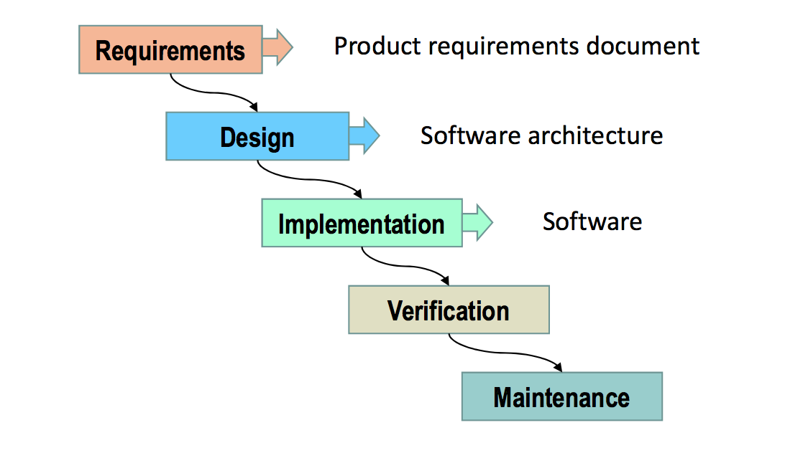

软件工程的定义
软件工程是应用工程的开发的软件中的系统方法，是利用系统，规范，可量化方法来开发，运行和维护软件的应用；同时也是一种在科学技术知识，方法，设计经验，实现，测试以及软件文档上的系统应用。总的来说就是用系统方法开发软件的应用方法。
解释导致 software crisis 本质原因、表现，述说克服软件危机的方法
本质原因
- 软件危机的根源
- 软件的大量需求与软件生产力效率之间的矛盾
- 软件系统的复杂性与软件开发方法之间的矛盾
- 软件本身的特点
- 软件是一种抽象逻辑
- 软件是开发人员的智力劳动成果
- 软件具备强烈的个性化特征
- 软件规模日趋扩大，实现的业务逻辑与流程复杂
- 软件开发的客观因素
- 系统需求分析不足
- 开发周期管理不善
- 开发过程缺乏规范
- 质量控制标准规程滞后
- 软件维护计划被忽视
- 软件开发的企业因素
- 软件企业的作坊式管理
- 软件企业规模的急剧膨胀
表现形式
The crisis manifested itself in several ways: (软件危机的表现形式)
- Projects running over-budget
- Projects running over-time
- Software was very inefficient
- Software was of low quality
- Software often did not meet requirements
- Projects were unmanageable and code difficult to maintain
- Software was never delivered
- 程序开发成本高
- 程序开发进度长，难以预测
- 软件运行效率低
- 软件代码质量低
- 软件产品不能符合需求
- 项目很难管理，而且代码难以维护
- 程序不能被接管
解决途径
- 正确认识计算机软件的内涵。
- 采用工程项目管理方法实施软件开发的组织管理。
- 软件开发应该是一种组织良好、管理严密、协同配合的工程活
动。
- 软件开发应该是一种组织良好、管理严密、协同配合的工程活
- 采用成熟的软件开发技术和方法，开发和使用适当的软件工具。
软件生命周期
计算机软件有一个孕育、诞生、成长、成熟、衰亡的生存过程，这样的过程称为软件的生命周期 (也称软件开发生命周期 SDLC)。软件生命周期将软件开发过程划分为若干阶段，每个阶段有明确的任务目标和运行机制，从而使复杂的软件开发过程能够得到适当的控制和管理。
软件生命周期模型
软件生命周期模型，也称软件开发过程模型 (SDM)，它从软件需求定义开始直至软件经使用后废弃为止，描述软件生命周期各个阶段的联系，是跨越整个软件生存期的软件开发、运行和维护所实施的全部过程、活动和任务的结构框架，也是对软件开发实际过程的抽象。SDM包括构成软件过程的各种活动、生 成的软件工件 (Artifact) 以及参与角色等，清晰、直观地表达了软件开发全过程。
而常见的软件生命周期模型有瀑布模型，螺旋模型等
瀑布模型

瀑布模型中的每一个开发活动具有下列特征:
- 本阶段活动的工作对象来自于上一项活动的输出，这些输出一 般是代表本阶段活动结束的里程碑式的文档。
- 根据本阶段的活动规程执行相应的任务。
- 本阶段活动产出相关的软件工件，作为下一阶段活动的输入。
- 对本阶段活动执行情况进行评审。
螺旋模型

螺旋模型沿着螺线进行若干次迭代，图中的四个象限代表了以下活动：
- 制定计划：确定软件目标，选定实施方案，弄清项目开发的限制条件
风险分析：分析评估所选方案，考虑如何识别和消除风险
实施工程：实施软件开发和验证
- 客户评估：评价开发工作，提出修正建议，制定下一步计划
SWEBoK 的 15 个知识域
Software Requirements(软件需求)
软件需求关注软件需求的启发，协商，分析，规范和验证。在软件行业中，人们普遍认为，当这些活动表现不佳时，软件工程项目非常容易受到攻击。软件需求表达了对软件产品的需求和限制，这些需求和约束有助于解决一些现实问题。
Software Design(软件设计)
设计指定义系统或组件的体系结构、组件、接口和其他特征的过程以及这些过程的结果。软件设计涵盖了设计过程和最终产品。软件设计过程是软件工程生命周期活动，其中分析软件需求以产生软件内部结构及其行为的描述，其将作为其构造的基础。软件设计（结果）必须描述软件体系结构 - 即软件如何分解和组织成组件以及这些组件之间的接口。它还必须能够描述那些构建它们的组件。
Software Construction(软件构建)
软件构建是指通过结合详细设计，编码，单元测试，集成测试，调试和验证来进行工作软件详细的构建。软件构建包括关于满足其要求和设计约束的软件程序开发的主题。这个知识领域涵盖了软件构建基础、管理软件建设、建筑技术、实际考虑和软件构建工具。
Software Testing(软件测试)
测试是一项旨在评估产品质量并通过识别缺陷来改进产品质量的活动。软件测试涉及在有限的测试用例集上针对预期行为动态验证程序的行为。这些测试用例是从（通常非常大的）执行域中选择的。软件测试知识领域包括软件测试的基础知识、测试技术、人机用户接口测试与评估、与测试有关的措施和实际考虑。
Software Maintenance(软件维护)
软件维护包括增强现有功能，调整软件以在新的和修改的操作环境中运行，以及纠正缺陷。这些类别称为完善，自适应和纠正性软件维护。软件维护知识领域包括软件维护的基础知识（维护的性质和需求，维护类别，维护成本）、软件维护中的关键问题（技术问题，管理问题，维护成本估算，软件维护测量）、维护过程、软件维护技术（程序理解，重新设计，逆向工程，重构，软件退役）、灾难恢复技术和软件维护工具。
Software Configuration Management(软件配置管理)
系统的配置是硬件，固件，软件的功能和/或物理特征，或者它们的组合。它还可以被视为根据特定构建过程组合的特定版本的硬件，固件或软件项的集合，以满足特定目的。因此，软件配置管理（SCM）是在不同时间点识别系统配置的规则，用于系统地控制配置的改变，以及维持配置在整个软件生命周期中的完整性和可追溯性。软件配置管理知识领域涵盖SCM过程的管理、软件配置识别、控制、状态核算、审计、软件发布管理和交付和软件配置管理工具。
Software Engineering Management(软件工程管理)
软件工程管理涉及规划、协调、测量、报告和控制项目或程序，以确保软件的开发和维护是系统化的，规范化的和量化的。 软件工程管理知识领域涵盖了启动和范围定义（确定和协商要求，可行性分析以及要求的审查和修订）、 软件项目计划（过程计划，工作量估算，成本和进度，资源分配，风险分析，质量计划）、软件项目制定（计量，报告和控制;收购和供应商合同管理）、产品验收、审查及分析项目绩效、项目结束和软件管理工具。
Software Engineering Process(软件工程过程)
软件工程关注软件生命周期过程的定义，实施，评估，测量，管理和改进。涵盖的主题包括流程实施和变更（流程基础架构，流程实施和变更模型以及软件流程管理）、流程定义（软件生命周期模型和流程，流程定义，流程适应和流程自动化的符号）、过程评估模型和方法;测量（过程测量，产品测量，测量技术和测量结果的质量）和软件处理工具。
Software Engineering Models and Methods(软件模型和方法)
软件工程模型和方法解决了涵盖多个生命周期阶段的方法，而其他知识领域涵盖特定生命周期阶段的特定方法。其涵盖的主题包括建模（软件工程模型的原理和属性，语法与语义与不变量，前置条件，后置条件和不变量）、模型类型（信息，结构和行为模型）、分析（分析正确性，完整性，一致性，质量和相互作用;可追溯性;以及权衡分析）和软件开发方法（启发式方法，形式方法，原型方法和敏捷方法）。
Software Quality(软件质量)
软件质量是许多SWEBOK V3 知识领域中普遍存在的软件生命周期问题。此外，软件质量知识领域还包括软件质量的基础知识（软件工程文化，软件质量特性，软件质量的价值和成本以及软件质量改进）、软件质量管理流程（软件质量保证，验证和确认，审核和审核）和实际考虑（缺陷表征，软件质量测量和软件质量工具）。
Software Engineering Professional Practice(软件工程专业实践)
软件工程专业实践关注软件工程师必须具备的软件工程知识，技能和态度，要求工程师专业，有责任心以及道德感。 软件工程专业实践知识范围涵盖专业性（专业行为，专业协会，软件工程标准，雇佣合同和法律问题） 道德准则、小组动态（团队合作，认知问题复杂性，与利益相关者互动，处理不确定性和模糊性，处理多元文化环境）和沟通技巧。
Software Engineering Economics(软件工程经济学)
软件工程经济学关注的是在业务环境中做出决策，以使技术决策与组织的业务目标保持一致。涵盖的主题包括软件工程经济学的基本原理（提案，现金流量，货币时间价值，计划视野，通货膨胀，折旧，替代和退休决策）、非营利性决策（成本效益分析，优化分析）、估计、经济风险和不确定性（估算技术，风险决策和不确定性）、和多属性决策（价值和衡量尺度，补偿和非补偿技术）。
Computing Foundations(计算基础)
计算基础涵盖了提供软件工程实践所需的计算背景的基础主题。涵盖的主题包括问题解决技术、抽象、算法和复杂性、编程基础、并行和分布式计算的基础知识、计算机组织、操作系统和网络通信。
Mathematical Foundations(数学基础)
数学基础涵盖了软件工程实践所必需的数学背景的基础主题。涵盖的主题包括集合、关系和功能、基本命题和谓词逻辑、证明方法、图论、离散概率、语法和有穷状态机和数论。
Engineering Foundations(工程基础)
工程基础涵盖了提供软件工程实践所必需的工程背景的基础主题。涵盖的主题包括经验方法和实验技术、统计分析、测量和指标、工程设计、仿真与建模和根本原因分析。
简单解释 CMMI 的五个级别。

由上图可得到：
Level 1 - Initial(初始级)：无序，自发生产模式
该级别上软件的过程有序性程度不高，甚至会出现混乱的情况，软件是否能够成功主要取决于研发人员本身的实力和努力，项目可能会成功，但是任务的完成中存在很大的偶然性。
Level 2 - Managed(可管理级)：以项目为特征的过程，通常具备反应性
公司在管理上已经具备了一定的能力，能够建立比较基础的项目管理规范，对于项目的实施能够列出相应的计划和流程，并且随着流程的进行可以对此实施监控和控制。
Level 3 - Defined(已定义级)：以组织为特征的过程，具备主动性
在第三级别的情况下，企业不仅能够把软件管理和工程管理两个过程都实现标准化和文档化，而且软件产品的整个生产过程，都是可见可控的。也就是说，企业根据自身的情况以及自己的流程能够建立一套规范制度的管理体系与流程，从而保证在同类或者是不同类的项目上都能够得到成功的实施。
Level 4 - Quantitatively Managed(量化管理级)：具有量化和控制性的过程
在第四级别的时候，企业的项目管理首先是已经形成了完善的制度，而且根据名称，可以平判处，这一级别最关键的两个字就是“量化”。对项目流程的管理做到量化、数字化、具体化，对软件过程和产品精度都有定量的控制，实现管理更加细致化，精细化，项目的质量也能因此保证相对的高质量和稳定性。
Level 5 - Optimizing(优化级)：更加关注过程上的改进
第五级别优化管理级是软件企业项目管理目前来说的最高境界。企业能够非常主动的来对流程进行一定程度的改善，将更加先进的技术运用到其中，让流程优化上升到一个更高的层次。在第四级别的基础上，还能够利用当前的信息资料来对项目过程中出现的问题进行预防，让每一个项目都能有非常高的质量。
用自己语言简述 SWEBok 或 CMMI
SWEBok
SWEBok指软件工程知识体系指南，它指出了业界普遍接受的关于软件工程方面的知识，定义了软件工程专业学生毕业时应该掌握具备的知识。如今该指南已经涵盖了15个知识领域，分别为软件需求、软件设计、软件构建、软件测试、软件维护、软件配置管理、软件工程管理、软件工程过程、软件工程模型和方法、软件质量、软件工程专业实践、软件工程经济学、计算基础、数学基础和工程基础。这是软件工程界的里程碑式的指南，为今后软件工程的发展奠定了坚实的基础。
CMMI
CMMI即能力成熟度模型集成，致力于帮助软件企业对软件工程过程进行管理和改进，增强开发与改进能力，从而能按时地、不超预算地开发出高质量的软件。其所依据的想法是：只要集中精力持续努力去建立有效的软件工程过程的基础结构，不断进行管理的实践和过程的改进，就可以克服软件开发中的困难。CMMI为改进一个组织的各种过程提供了一个单一的集成化框架，新的集成模型框架消除了各个模型的不一致性，减少了模型间的重复，增加透明度和理解，建立了一个自动的、可扩展的框架。因而能够从总体上改进组织的质量和效率。


评论加载中